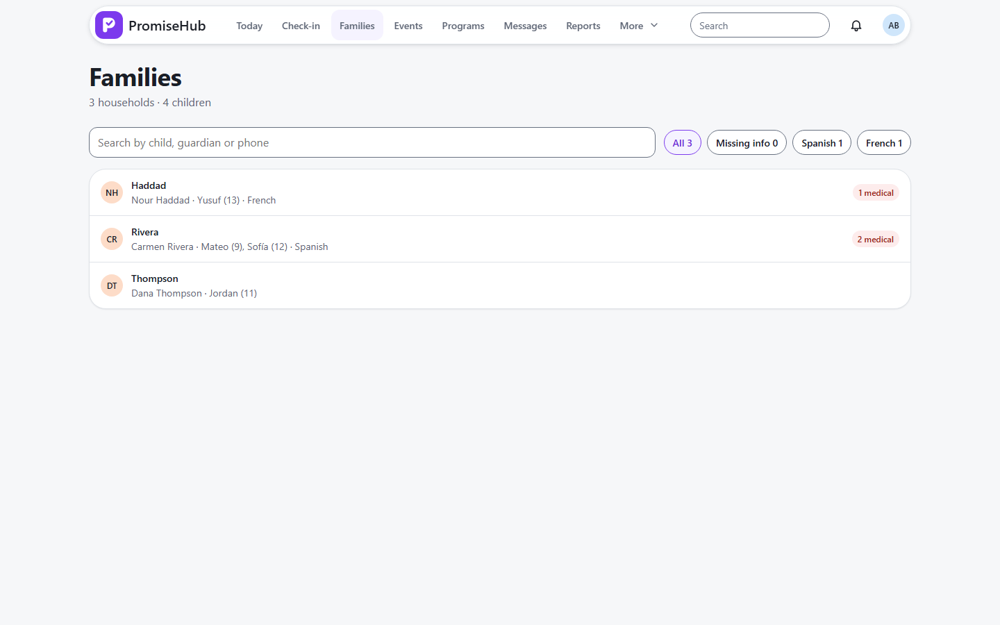
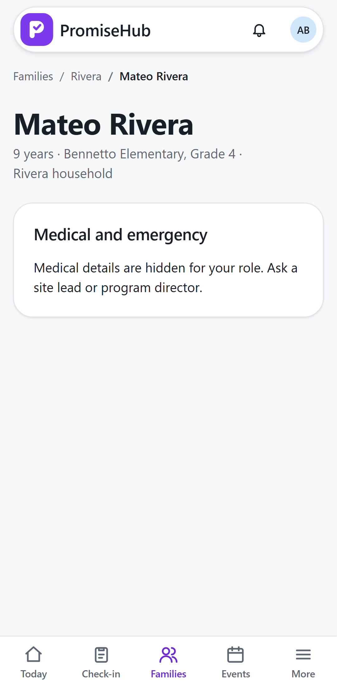

PromiseHub · Video 32
Use permitted child details
What a youth worker sees, and what never leaves the server
What a youth worker sees, and what never leaves the server
Mateo shows; Kevin is not in her sessions.


| Case | Answer |
|---|---|
| Youth worker opens a child outside her sessions | 403 · audited |
| Youth worker opens Mateo | Age, no date of birth |
| Another organization's child | 404 |
| Roster off | 404 |
Next: monitor today's work